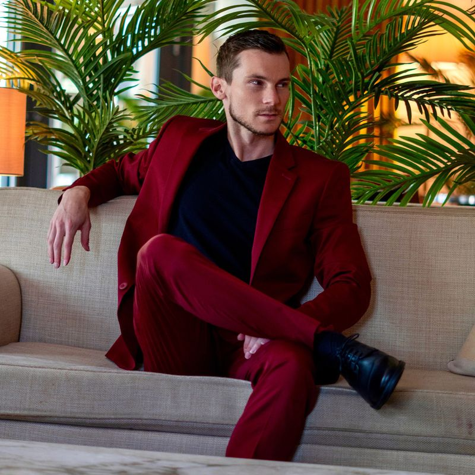

ABOUT BRYAN
A serious technical career in cloud security and AI, powered by music, markets, and a relentless drive to build.

00 · The Person
Who is Bryan Totty?
I've led international business teams, hiked remote mountainsides, performed in front of large audiences, and studied wealth generation and investing deeply. My friends describe me as driven and a supportive mentor. I aim to inspire others to explore beyond their perceived limitations.
01 · Career
14+ years across IBM, Red Hat, Meta, Microsoft.
At Microsoft, I'm transitioning into a Security Engineer role focused on automation for cloud infrastructure. I build AI agents and tooling that run compliance audits (SOC 2, GDPR, FedRAMP, and other frameworks), enforce least privilege, and surface exposed secrets at scale. The agents use Claude Opus and the latest OpenAI models to scan combinations of infrastructure and databases, drive vulnerability management and remediation across millions of cloud nodes, and pipe findings into automated terminal and email reports that track risk in real time.
Before Microsoft, I was at Meta running enterprise security programs at massive scale. I migrated 30K+ VDI clients for global operations, drove a legal hold program across 100K+ devices, and led a secure USB rollout that touched 10K+ users. Big company, big numbers, fast pace.
I spent over 10 years at Red Hat, first as a Security Senior Technical Support Engineer leading 7 teams, then as Senior Security TPM overseeing security processes across 16 products with 200+ stakeholders. I led the rollout of a new Incident Response framework, built out the Software Bill of Materials (SBOM) program, onboarded 3 acquired companies into Red Hat's security processes, and spoke at security events across the US.
I started at IBM as a Server Test Engineer, testing prototype server hardware and software in a multi-million-dollar R&D lab. That's where I got my hands dirty with real infrastructure. LinkedIn.
IBM
Server Test Engineer
Red Hat
Sr. Security TPM
Meta
Security Enterprise TPM
Microsoft
Security Engineer
02 · AI & Automation
If AI can handle it, I'm automating it.
I build AI tools and workflows that make security programs run faster. At Microsoft, that means agents that audit compliance frameworks, enforce least privilege, hunt exposed secrets, and drive vulnerability remediation across millions of cloud nodes, with automated terminal and email reporting on top. Outside of work, I build custom AI agents for market analysis, real estate research, and personal productivity.
03 · Credentials & Stack
Certifications.
Tech Stack
04 · Markets & Investing
A decade of disciplined study.
I began studying the traditional stock market and investments pretty intensely around 2015. Knowledge is power in this space, and contrary to conventional belief, the small investors (non multi-billion dollar funds) have a lot more potential for large returns than the bigger players do. I read every possible book I could get on general finance over the course of years and would fall asleep listening to audio books related to financial success to program myself to think about it constantly.
In 2019, I began advanced technical market analysis courses, which I have studied deeply on a daily basis for years to master technical analysis and options trading.
05 · Entrepreneur
Music led to business led to crypto.
My path to becoming an entrepreneur started with my passion for music and evolved out of necessity. In order to market, brand, and get my message out, I had to become one. Later in life, I've taken that passion for business and startups and bundled it into my intense interest in technology and cryptocurrencies. I frequent meetup events and conferences to always keep learning, often where I meet other entrepreneurs whom I partner with. I am an early investor in a few small startups with big potential.
06 · Crypto
Tokens travel. So do I.
The crypto market is a natural fit for my interests and skillset because I have a long background in technology and a deep study and discipline towards investing, trading, and technical analysis. It also bundles in nicely with a nomad lifestyle when you can take your tokens anywhere and easily transact internationally. It can also serve to prepare in the wake of global currency turbulence as we have seen since the 2020 pandemic. These cycles are not new, but have been accelerated by governments around the world.
07 · Nomad
Freedom-first community operator.
Community operator and curator for a high net worth nomad community closely associated with Nomad Capitalist, but not directly affiliated. I can be contacted directly if you would like to join our WhatsApp and Discord groups for the private links.
We share real-world business experience focused on freedom, tax efficiency, and international business and investing opportunities. I am also knowledgeable about residencies and citizenships for multiple countries to allow optimal flexibility in freedom and lifestyle.
08 · Music
By 25, I owned a record label.
By age 25, I owned a record label, performing live shows, doing radio station interviews, building marketing strategies, and professionally recording myself and clients.
When I started in music, there were no streaming platforms, YouTube did not exist, and social media wasn't a thing. You had to hustle and network in person. At shows, meeting venue owners through weeks, months, years of dedication. We were on the streets of college campuses handing out fliers and self-promoting our bands. I learned how to network and be persistent because the only exposure route was getting on a radio station or TV.
I have always enjoyed creating in a way that allows me to express myself and impact others. With my solo rap music, I really dug deep into the lyrical techniques and always challenged myself to rap in different styles and try an array of different music, from classic hip-hop to trap to rock music. Through my music, I embrace a range of ways to connect people: from fun all the way to mysterious and dark music.
As a side project, I recorded and performed two music videos for the enterprise open source software company Red Hat.
09 · Education
Where I trained.
Core Credential of Readiness (CORe)
HBX | Harvard Business School · Cambridge, MA
Bachelor of Science (BS), Cyber Security
East Carolina University · Greenville, NC
Associate of Science (AS), Computer Network Technology
Wake Technical Community College · Raleigh, NC
10 · In The Press
A few highlights. More on the way.
Interested in booking me to speak?
SEE SPEAKING TOPICS